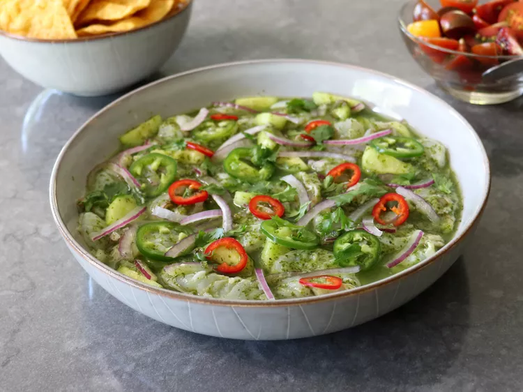

Garlic Shrimp Aguachile

Description
This corned beef stroganoff, with mushrooms, creme fraiche, and
dill, is a switch from the classic St. Patrick's Day preparation.
The result is amazing—it really does taste like a proper
stroganoff, but even more flavorful.
Ingredients
For Aguachile:
- 1/2 cup packed cilantro leaves
- 3 cloves garlic, sliced
- 1/2 serrano chile pepper, sliced, or to taste
- 1/3 cup fresh lime juice, from 2 to 3 limes
- 1/3 cup water
- 1/2 teaspoon kosher salt
- 1/4 teaspoon ground black pepper
- 1/4 teaspoon white sugar
For Shrimp:
- 1/2 pound raw shrimp - peeled, meticulously deveined, and sliced in half horizontally if large
- 1/3 cup thinly sliced red onion
- 1 cup thinly sliced peeled cucumber
- 1 jalapeno, thinly sliced
- 2 tablespoons cilantro leaves, or as needed
- tortilla chips, for serving
Steps
- Combine cilantro, garlic, serrano chile, lime juice, water, salt, pepper, and sugar in a tall cup or the jar of a blender; blend with a stick blender or regular blender until smooth. Refrigerate aguachile while other ingredients are prepared.
- Add shrimp, cucumber, and red onion to a bowl, and pour in aguachile. Stir well, and press shrimp down into aguachile to cover. Wrap and refrigerate for 30 minutes to 1 hour before serving.
- Cook's Note: The dish can be served immediately, but refrigerating for 30 minutes to 1 hour will achieve a more ceviche-like (“cooked”) texture. The dish can also be tightly covered and refrigerated overnight to serve the next day.
- Sprinkle aguachile with jalapeno slices and cilantro to garnish, and serve with tortilla chips.
Home